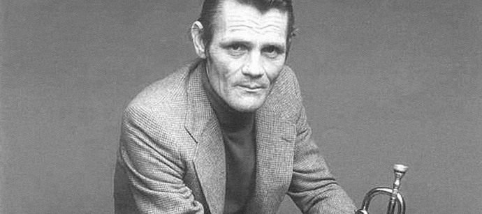

Chet Baker
The Prince of Cool

Chet Baker in his 50's holding his trumpet
A time-line of Chet Baker's life:
- 1929 - Chesney Henry "Chet" Baker, Jr. was born on December 23, 1929 in Yale, Oklahoma. He was raised by a family of musicians. His father a guitar player, and mother a pianist.
- 1940 - In part to the great depression Chet's family moved to Glendale, California. This is where he began his journey in music, singing in a church choir.
- 1942 - When he was 13, he took up the trumpet, as he found the trombone his father gave him was too cumbersome.
- 1946 - In 1946 he dropped out of highschool to join the US Army, where he was assigned to the 298th Army Band. It was there where he learned about and fell in love with modern jazz.
- 1948 - In 1948 Baker left the army to study music theory and harmony at El Camino College in LA. Only to drop out two years later to re-enlist in the Army.
- 1951 - Baker was discharged from the Army and started focusing on building his musical career.
- 1952 - Baker joined the Gerry Mulligan Quartet. Baker and mulligan took a different approach than other jazz musicians and instead of playing identical melodies in unison, they complemented eachother by anticipating what the other was going to play next. It was with the Mulligan group where Baker found notiriaty with their rendition of "My Funny Valentine".
- 1953 - In 1953 and 1956 Baker won reader's polls at Metranome and Downbeat magazines. Beating other famous jazz musicians such as Miles Davis.
- 1957 - Baker started using and became addicted to heroin. A habit he would unfortunately never be able to quit. This lead to multiple arrests on drug charges, and kicked off his eventual decline in health.
- 1968 - After multple lackluster album releases. Baker decided to halt his music career and no longer made music or performed in public. Eventulaly moving back to San Jose with his mother and living off of welfare. He was arrested later on for forging heroin prescriptions, and was released on the condition that he stay on methadone for the next 7 years.
- 1973 - Baker attempted a comback, returning to his roots in Straight-Ahead Jazz, eventually releasing his come-back album She Was Too Good for Me.
- 1988 - In 1988, Baker was found dead on the street below his hotel in Amsterdam with serious wounds to his head. Cocaine and heroine were found in his room and is suspected as the contributing factor to his accidental death. A plaque was placed outside the hotel in his memory and draws fans from all over the world to visit and pay tribute to this once great musician.